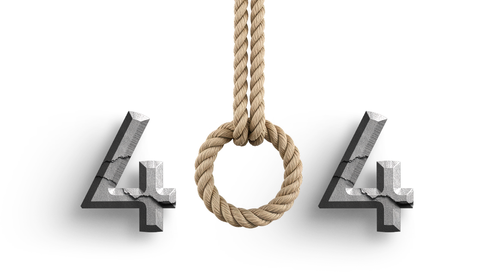

404 Knot Found
Our proprietary rope-interlocking algorithms could not locate this page.
The load-bearing attachment workflow you are looking for does not exist in our multi-cord database. It is possible this page was tied using non-standard mystery garage twine and has failed to scale.
What to do next:
- Apply friction to your browser back button.
- Optimize your navigation by returning to the main dashboard. (Yes, back button)
- Live. Laugh. Loop. (And pretend this never happened).